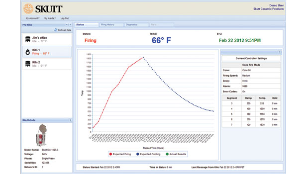
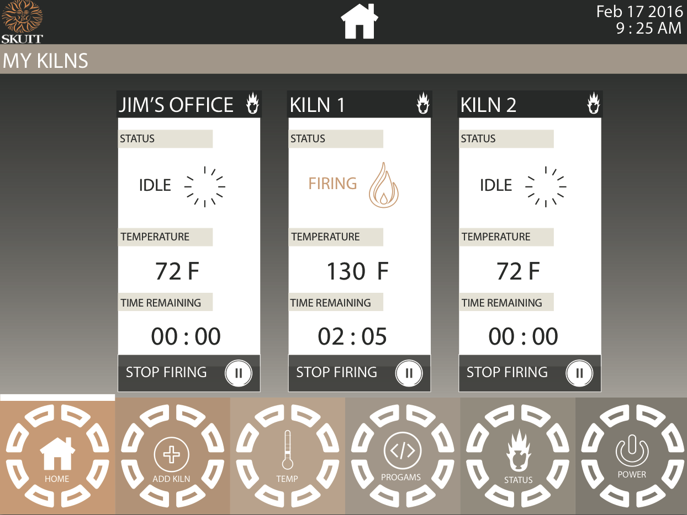

The Task:
KilnLink is a cloud based Kiln Monitoring System that allows you to check
the status of your kiln from anywhere you have access to the internet. The task here was
to develop the user interface for an app serving to monitor and control Skutt KilnLinks’s
ceramic kilns.
My Approach:
After researching the current problems with KilnLink’s Interface and reviewing the criteria
most essential to Skutt, I created an interface that emphasized the most important aspects
necessary to be successful. It was crucial that the system be easy to naviagte
and less intimidating than the current interface.
User Research:
After interviewing Skutt Kiln users, we found that the most important features necessary to improve the current interface were
to display energy consumption, temperature in various areas of the kiln, ventilation system airflow,
firing time elapsed, kiln lock status, and external temperature at thermocouple location.
Re-Design
The image below is the home page of the original interface for Skutt Kilns. While some of the information is clear,
the graphs are hard to follow and individuals noted that the most important information was not
easy to find.

The image below is the home page of the improved interface. A navigation bar with five tabs is displayed on the bottom of the screen to allow
for easy navigation from one page to the next. A white stripe appears at the top of the chosen tab to indicate
which page the user is on. From a glance, the user is able to see all of their kilns and important information including
the status, temperature, and time remaining on each kiln. Additionally, the user is given the option to "stop firing".
